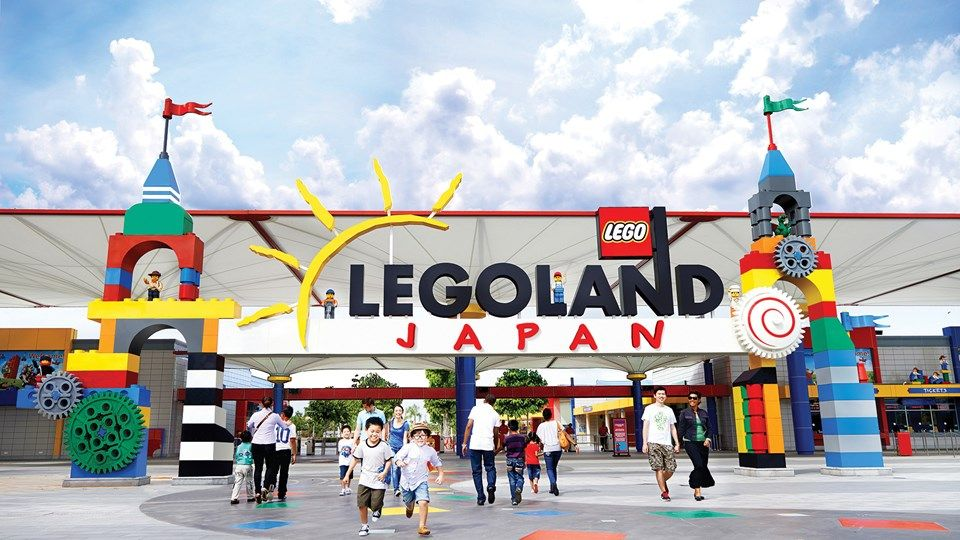
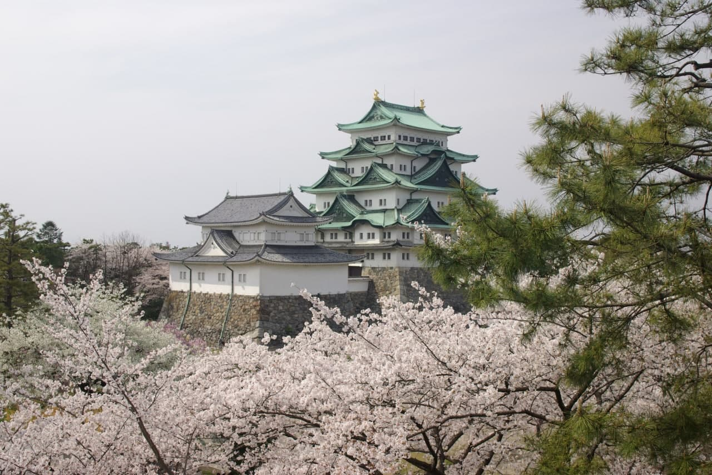
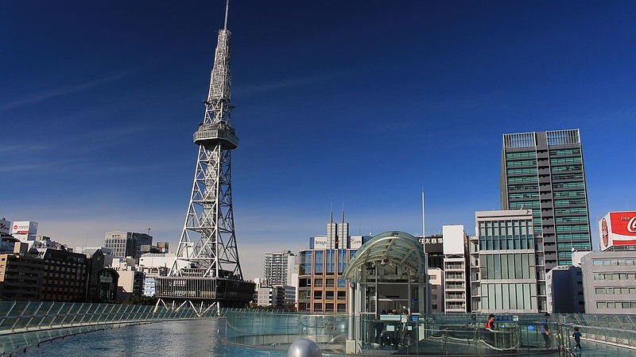

Legoland Japan (Japanese: レゴランド・ジャパン, Hepburn: Regorando Japan) is a theme park in Nagoya, Japan. It opened on April 1, 2017. It is the first Legoland theme park in Japan and the second in Asia, after Legoland Malaysia Resort, and the eighth worldwide. The park was projected to attract over two million visitors annually.
legoland

On June 30, 2014, Merlin Entertainments announced plans to open a LEGOLAND Resort in Nagoya. Construction officially began on April 15, 2015.LEGOLAND Japan officially opened on April 1, 2017.The entrance admission is ¥6,900 for adults and ¥5,300 for children aged 3–12. Many news sources commented on the ticket prices, which are comparable to Tokyo Disneyland's ticket prices despite the LEGOLAND park being considerably smaller.
Park locations
LEGOLAND is located away from the mainland with three different ways to access the park: by bus, by train, and by automobile. The park provides guest transportation to those who are needing wheelchairs and offers stroller rentals. On arrival at the park, there is a waiting area for entry. Entering LEGOLAND Japan, visitors are welcomed with large art works and sculptures of LEGO creatures and life-size animals. Observation Tower is located at the center of the entrance, allowing visitors to oversee the park. Walking by LEGOLAND's iconic sign, there are colorful buildings scattered around the resort, including restaurants and shops.
Nagoya Castle

Nagoya Castle was constructed by the Owari Domain in 1612 during the Edo period on the site of an earlier castle of the Oda clan in the Sengoku period. Nagoya Castle was the heart of one of the most important castle towns in Japan, Nagoya-juku, a post station on the Minoji road linking two of the important Edo Five Routes, the Tōkaidō and the Nakasendō. Nagoya Castle became the core of the modern Nagoya and ownership was transferred to the city by the Imperial Household Ministry in 1930. Nagoya Castle was destroyed in 1945 during the bombing of Nagoya in World War II and the reconstruction and repair of the castle has been undergoing since 1957.
Meijō (名城), another shortform way of pronouncing Nagoya Castle (名古屋城), is used for many Nagoya city institutions such as Meijō Park, the Meijō Line of the Nagoya Municipal Subway, and Meijo University, reflecting the cultural influence of this historic structure. The castle has also historically been called Kinjō (金城), which means "Golden Castle".
Castle Location
From Nagoya Station, take the Sakuradori Subway Line to Hisayaodori Station (5 minutes) and change to the Meijo Subway Line to Shiyakusho Station (2 minutes). The total one way journey takes about ten minutes and costs 240 yen. From the nearest exit, it is a three minute walk to the castle's east gate.Alternatively, the castle's main gate can be reached from Nagoya Station by the Meguru tourist loop bus in about 25 minutes. The fare is 210 yen per ride or 500 yen for a day pass.
Nagoya TV Tower (MIRAI TOWER)

The Nagoya TV Tower (名古屋テレビ塔, Nagoya Terebi-tō) is a TV tower in Nagoya, central Japan. The famous movie monster, Godzilla pulled the tower down in Mothra vs. Godzilla (1964), and twenty-eight years later, it was destroyed again in the 1992 remake, Godzilla vs. Mothra. This time around, it is demolished by the monster Battra, when the creature attacks Nagoya.
In the anime Seraph of the End, the tower makes a brief appearance in episode 5 of season 2, where characters Yoichi Saotome and Shinya Hiragi use the tower as their sniping point in their mission to assassinate vampire noble Lucal Wesker.
Tower Location
It is the oldest TV tower in Japan, and was completed in 1954. It is located in the centre of Hisaya Ōdori Park. The tower is 180 metres high, and has two main observation decks at the heights of 90 metres (the indoor Sky Deck) and 100 metres (the outdoor Sky Balcony). The tower also includes a restaurant and gallery at 30 metres. Nagoya TV Tower closely resembles the Eiffel Tower. Recently, the tower became known under the nickname of "Thunder Tower" due to the nighttime illumination. The tower also included a bowling alley at the top.